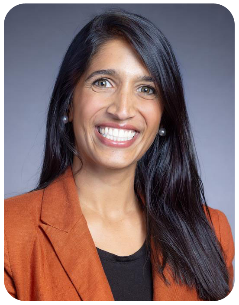
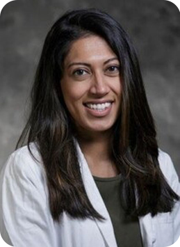
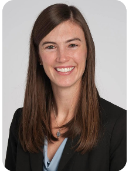
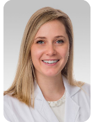
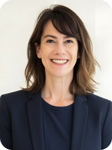

We are collaborating with International Organization of Multiple Sclerosis Nurses (IOMSN) to deliver a webinar on pregnancy-related topics, featuring clinicians from the NEU-RING network.
Please join neurologist experts in women's health for an informational webinar outlining how you can prepare for a healthy pregnancy if you have a diagnosis of multiple sclerosis, neuromyelitis optica spectrum disorder or MOGAD. These webinars are held every two months by experts from the Neu-Ring Consortium (Neuring.org) and moderated by a team led by Libby Levine, NP.
*This informational webinar is not intended to replace the personalized medical advice of your specialist.




